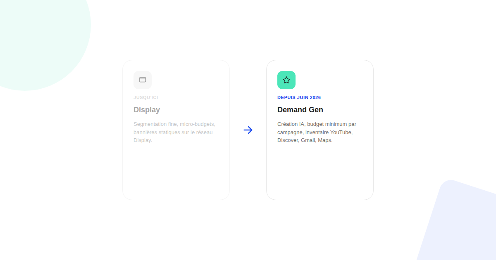

Google Ads Demand Gen : ce qui change quand Display disparaît
Depuis juin 2026, Google propose — puis impose progressivement — la migration des campagnes Display vers Demand Gen. Ce n'est pas un simple changement de nom : ce qu'on y gagne et ce qu'on y perd ne sont pas symétriques.

Google a ouvert en juin 2026 un outil de migration volontaire permettant de basculer une campagne Display existante vers Demand Gen. Sur le papier, c'est un changement d'étiquette. Dans les faits, c'est un changement de logique : Demand Gen n'est pas Display avec un nouveau nom, c'est un format pensé pour l'automatisation créative et le ciblage par signaux, qui a sacrifié une partie du contrôle fin qui faisait la force de Display.
Ce qui bascule, et quand
La migration a démarré par un outil dédié dans l'interface Google Ads, à l'initiative de l'annonceur, pour les campagnes Display éligibles. La suite annoncée est plus radicale : la création de nouvelles campagnes se fera uniquement sous Demand Gen, et les campagnes Display restantes basculeront automatiquement. Il n'existe pas de date de bascule totale unique et figée — le plus fiable reste de vérifier directement dans son compte si l'option de migration ou un message de bascule automatique est déjà apparu, plutôt que de se fier à une échéance générale.
Ce que Demand Gen apporte en échange
La contrepartie n'est pas négligeable. Demand Gen a reçu en mars 2026 des outils de création publicitaire par IA générative vidéo, une intégration avec des partenariats créateurs YouTube pour utiliser des formats natifs, et un objectif d'optimisation orienté « croissance organique » qui vise aussi les vues YouTube non payantes générées par la campagne. Le format couvre un inventaire plus large que Display seul : YouTube (y compris Shorts), Discover, Gmail et Maps, en plus du Display Network classique.
Le changement qui va coincer les petits budgets
Le point le moins documenté dans les annonces, et le plus concret pour beaucoup d'annonceurs : Demand Gen impose un budget minimum par campagne. Cela rend impossible la pratique historique, très répandue sur Display, de tester des dizaines de micro-segments en parallèle à 1 ou 2 € de budget quotidien chacun. Ce n'est pas qu'un détail technique : c'est une méthode de test entière qui doit être repensée avant, et non plus pendant, la diffusion.
Ce qu'il faut vérifier avant de migrer
Avant d'activer la migration volontaire ou de laisser la bascule automatique se faire : consolider les segments de test en quelques audiences suffisamment larges pour tenir le budget minimum, préparer des assets créatifs compatibles avec les formats vidéo et natifs YouTube plutôt que de recycler les seuls bannières Display, et vérifier dans Ads Editor (version 2.12 ou supérieure) la prise en charge des objectifs de nouveaux clients, désormais disponible aussi pour Demand Gen.
Le vrai changement n'est pas le nom, c'est la logique de test
Display récompensait la granularité et la patience sur de petits budgets. Demand Gen récompense des audiences plus larges et des créations pensées pour l'IA générative et le format vidéo. Ceux qui migrent en gardant leur ancienne logique de segmentation fine risquent de sous-performer non pas à cause du nouveau format, mais parce qu'ils continuent à jouer selon les règles de l'ancien.
FAQ
Les campagnes Display existantes sont-elles supprimées automatiquement ?
Google a d'abord ouvert une migration volontaire via un outil dédié dans l'interface à partir de juin 2026, avant de prévoir une migration automatique des campagnes Display restantes éligibles. Vérifiez l'état de vos campagnes directement dans votre compte plutôt que de vous fier à une date unique.
Demand Gen remplace-t-il aussi Performance Max ?
Non, les deux coexistent. Performance Max reste orienté conversion automatisée tous inventaires confondus, tandis que Demand Gen cible la notoriété et la considération sur YouTube, Discover, Gmail et Maps avec davantage de contrôle créatif.
Peut-on encore tester de très petits budgets segmentés comme sur Display ?
Non, Demand Gen impose un budget minimum par campagne qui rend impossible la pratique historique du test à 1-2 € par jour sur de nombreux segments en parallèle. Les tests de segmentation fine doivent être repensés en amont, pas en cours de diffusion.
Envie d'anticiper la bascule Display → Demand Gen sur vos comptes ?
Pour aller plus loin, voir la page SEA, et l'article Performance Max.
Pour continuer sur ce sujet.